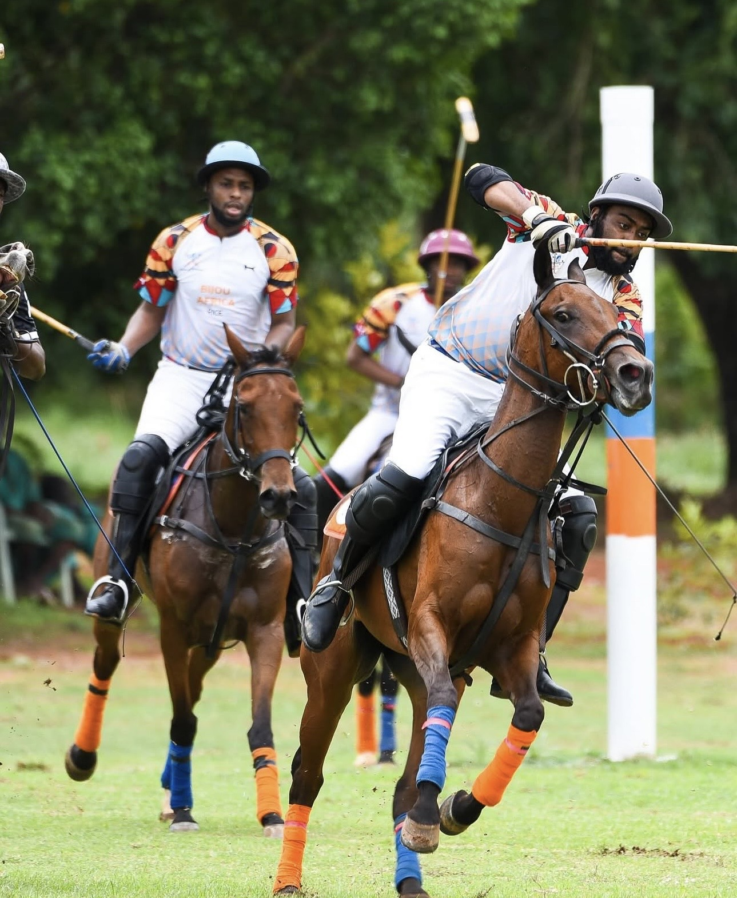

The Gallery
Moments from
the estate.
Polo, horses, villas and unforgettable days — a visual journey through Fifth Chukker.
Home / Gallery
The Gallery
Polo, horses, villas and unforgettable days — a visual journey through Fifth Chukker.
Home / Gallery
Explore





See It For Yourself
Step beyond the photographs — book a stay and live the estate for yourself.